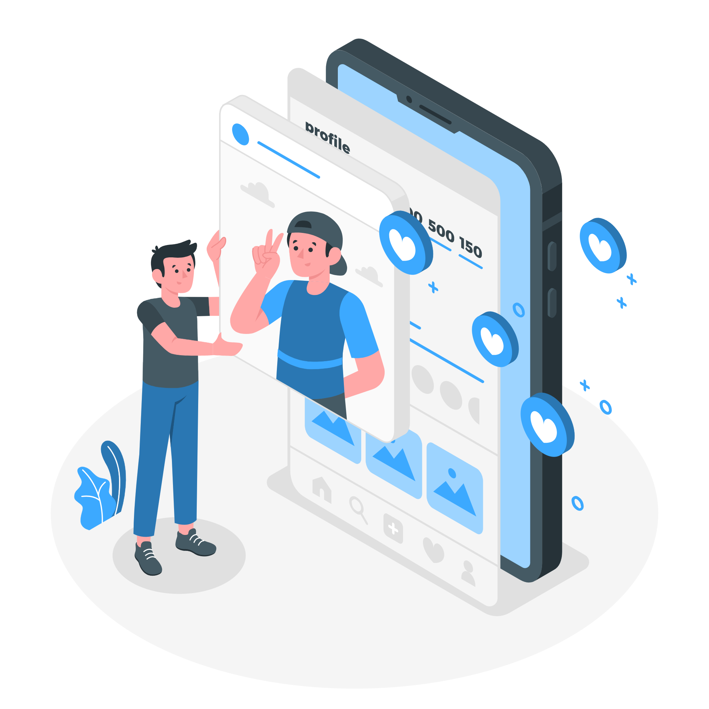
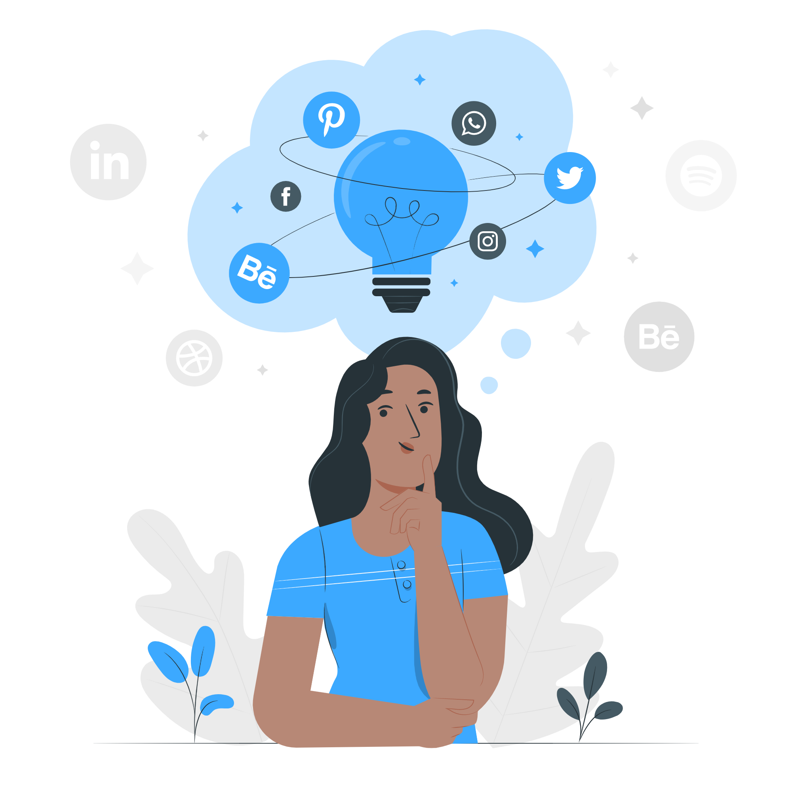
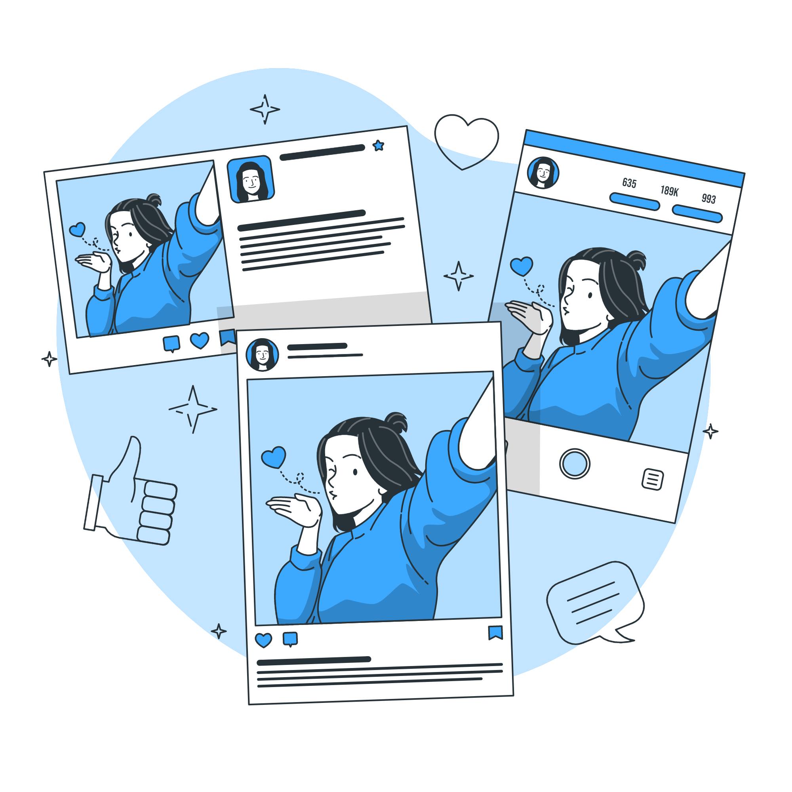
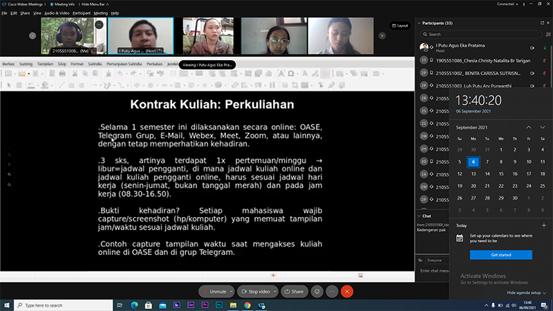

Di era revolusi industri 4.0 teknologi informasi mengalami perkembangan yang sangat pesat. Pesatnya perkembangan teknologi informasi menjadikan internet banyak diminati dan berpengaruh besar terhadap situasi kehidupan masyarakat. Banyak hal yang dapat dilakukan, dan media sosial adalah salah satu fitur yang paling sering digunakan oleh pengguna internet saat ini. Tidak dapat dipungkiri, keberadaan media sosial telah menjadi kebutuhan pokok bagi semua orang dan menjadi bagian yang tidak terpisahkan dari kehidupan kita. Sebelum kita melangkah lebih jauh, perlu kita ketahui terlebih dahulu, apa itu social media?

Social berarti sosial, tumbuh, berkembang dan media berarti tempat/ruang, jadi social media adalah media daring yang digunakan untuk berkomunikasi jarak jauh, berkolaborasi serta mendapatkan sebuah informasi melalui perangkat aplikasi yang menggunakan jaringan internet. Kehadiran media sosial telah membawa manfaat yang sangat signifikan dalam kehidupan kita, apa saja?
1. Menghubungkan semua orang (sarana komunikasi)

Dengan adanya media sosial berguna untuk membangun hubungan atau relasi tanpa mengenal jarak dan waktu karena media sosial memiliki jangkauan global. Media sosial mempermudah kita untuk berinteraksi di mana pun kita berada. Contohnya, kita memiliki saudara yang bekerja di luar negeri yang tidak memungkinkan kita untuk ketemu secara langsung. Maka dengan media sosial kapanpun dan dimanapun kita tetap bisa berkomunikasi.
2. Media Berbisnis

Zaman sekarang banyak orang sudah membangun bisnisnya sendiri, terlebih pada saat pamdemi covid-19, semua pekerjaan dilakukan secara daring tak terkecuali dengan pemasaran atau pendistribusian produk suatu usaha. Dengan adanya media sosial kita dapat berjualan secara online, menjangkau konsumen dan mempromosikannnya. Contohnya, kita bisa memanfaatkan situs market place atau e-commerce untuk memasarkan produk kita dan dapat dijangkau oleh orang diseluruh dunia.
3. Media pendidikan
Saat ini ilmu pengetahuan dan wawasan dapat diperoleh dari mana saja, tidak hanya di ruang kelas tetapi juga melalui media sosial. Contohnya, kita bisa belajar melalui platform pembelajaran online, mencari sesuatu yang ingin kita ketahui di Google, Youtube dan medisa sosial lainnya.
4. Media informasi
Dengan adanya media sosial kita dapat dengan mudah mengetahui informasi atau berita yang terjadi diseluruh belahan dunia secara real-time. Contohnya, ketika ada pemilihan Presiden di Amerika Serikat, kita dapat mengetahui dan menonton secara live (langsung) hanya dari rumah saja.
5. Media hiburan

Hanya dengan genggaman smartphone kita dapat melakukan aktivitas apa saja yang dapat menghibur diri kita seperti menonton, membaca, mendengarkan musik, dan lain sebagainya. Contohnya, kita bosan atau penat sehabis kelas/belajar dan ingin istirahat merehatkan diri, kita dapat memutar musik di Spotify untuk menghilangkan penat.
Demikianlah beberapa manfaat dan contoh penggunaan media sosial. Dalam kehidupan tentu ada baik dan buruk atau positif dan negative, begitu juga dengan media sosial. Tidak hanya manfaat positif yang didapatkan, tentu ada manfaat negatif dari media sosial. Sekarang tergantung kita, apakah kita memanfaatkan media sosial itu dengan bijak dan tepat?
Daftar Pustaka
1. Pemaparan materi pertemuan pertama mengenai sejarah awal, definisi, serta perkembangan media sosial oleh I Putu Agus Eka Pratama, S.T., M.T
2. aplikasisocialmedia_01.pdf
Capture Kehadiran
